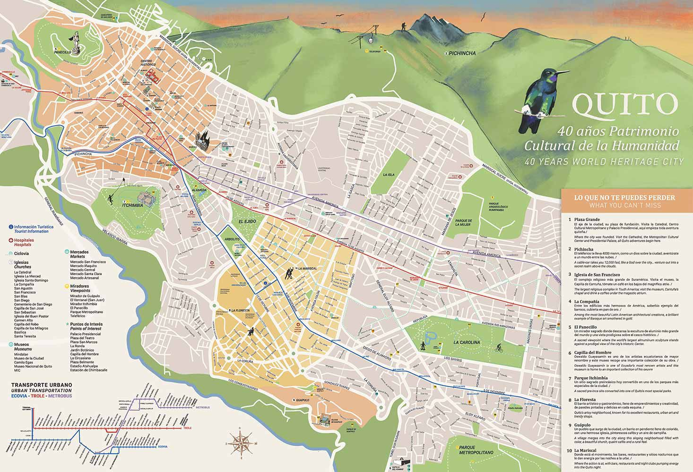

Actualmente, Quito se ubica en la meseta cuyo terreno irregular tiene altitud que oscila entre los 2850 metros sobre el nivel del mar en los lugares llanos y los 3100 metros sobre el nivel del mar en los barrios más elevados. Algunas estribaciones desprendidas de la cordillera de los Andes han formado un paisaje enclaustrado, dividido en su parte central por el cerro de El Panecillo 3035 metros sobre el nivel del mar. Al este por las lomas de Puengasí, Guanguiltagua e Itchimbía. Así como también, la principal cadena montañosa perteneciente al volcán Pichincha, el que se encuentra emplazado en la Cordillera de los Andes, encierra a la urbe hacia el oeste con sus tres diferentes elevaciones, Guagua Pichincha (4794 metros sobre el nivel del mar), Rucu Pichincha (4698 metros sobre el nivel del mar) y Cóndor Guachana. Debido a ello la ciudad posee una forma alargada, cuyo ancho no supera los 4 km, mientras que el distrito ocupa la meseta de 12.000 km2.
La mayor actividad telúrica se registró durante el período cuaternario en la época del pleistoceno, la cual formó el paisaje accidentado de la ciudad. En el plioceno, se presentaron varios eventos de considerable importancia en el país y el continente, sin embargo, la ciudad no fue influenciada mayoritariamente por estos. Pese a ello, existieron algunos acontecimientos durante ese período como se evidencia en algunas zonas del Este de la urbe.
